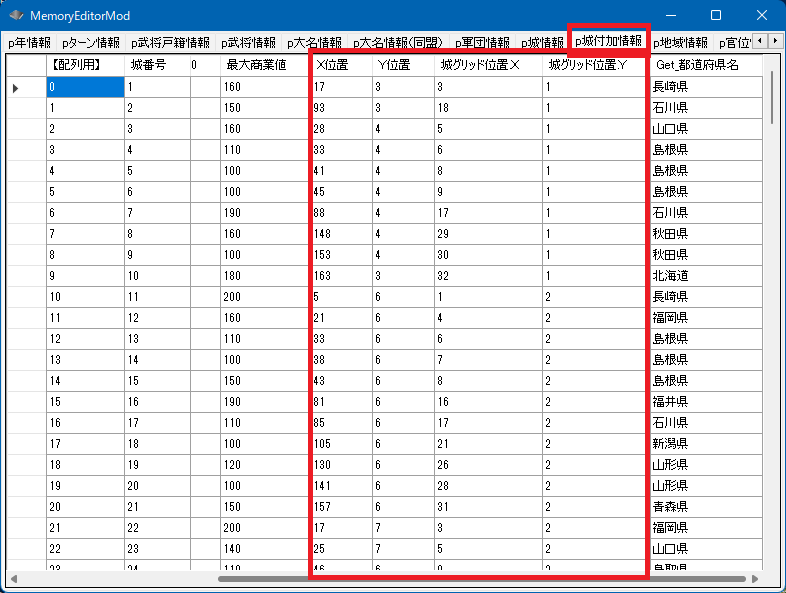
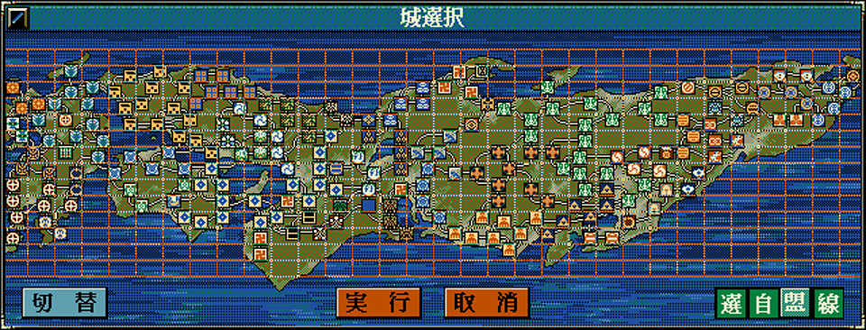
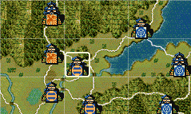
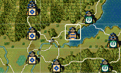

城は、いずれかのグリッドの中に入っています。
上下・斜めに隣接したグリッドに位置する城は、戦争で攻めることが出来る「隣接城」です。
城グリッド位置型
void カスタム::On_プレイヤ担当ターン《メイン画面》() {
int iCastleID_A = 城配列番号::観音寺城;
城グリッド位置型 位置a = Get_城グリッド位置(iCastleID_A);
デバッグ出力("観音寺:(X,Y):(%d,%d)", 位置a.Ｘ, 位置a.Ｙ);
int iCastleID_B = 城配列番号::二条城;
城グリッド位置型 位置b = Get_城グリッド位置(iCastleID_B);
デバッグ出力("二条城:(X,Y):(%d,%d)", 位置b.Ｘ, 位置b.Ｙ);
番号リスト型 城番号リスト = {
位置b.北西【城番号】,
位置b.北【城番号】,
位置b.北東【城番号】,
位置b.西【城番号】,
位置b.東【城番号】,
位置b.南西【城番号】,
位置b.南【城番号】,
位置b.南東【城番号】,
};
デバッグ出力 << "二条城の周辺の城は..." << endl;
for (int 城番号 : 城番号リスト) {
int iCastleID = 城番号 - 1; // 城番号→城番号【配列用】
if (0 <= iCastleID && iCastleID < 最大数::城情報::配列数) {
デバッグ出力 << Get_城名(iCastleID) << Get_城称(iCastleID) << endl;
}
}
}
bool Is_隣接城(int 城Ａ番号【配列用】, int 城Ｂ番号【配列用】);
斜めの隣接も含まれます。どちらかの城で戦争が起きれば、互いに戦争に巻き込まれる城か、と考えればよいでしょう。
街道でつながっているかどうかは考慮されません。
void カスタム::On_プレイヤ担当ターン《メイン画面》() {
int iCastleID_A = 城配列番号::二条城;
int iCastleID_B = 城配列番号::観音寺城;
if (Is_隣接城(iCastleID_A, iCastleID_B)) {
デバッグ出力 << "２つの城は隣接している" << endl;
}
else {
デバッグ出力 << "２つの城は隣接していない" << endl;
}
}
bool Is_隣接城(城グリッド位置型 &位置１, 城グリッド位置型 &位置２);
void カスタム::On_プレイヤ担当ターン《メイン画面》() {
int iCastleID_A = 城配列番号::二条城;
int iCastleID_B = 城配列番号::観音寺城;
城グリッド位置型 APOS = Get_城グリッド位置(iCastleID_A);
城グリッド位置型 BPOS = Get_城グリッド位置(iCastleID_B);
if (Is_隣接城(APOS, BPOS)) {
デバッグ出力 << "２つの城は隣接している" << endl;
}
else {
デバッグ出力 << "２つの城は隣接していない" << endl;
}
}
城グリッドベクトル型
２Ｄベクトル型
void カスタム::On_プレイヤ担当ターン《メイン画面》() {
int iCastleID_A = 城配列番号::観音寺城;
城グリッド位置型 位置a = Get_城グリッド位置(iCastleID_A);
デバッグ出力("観音寺:(X,Y):(%d,%d)", 位置a.Ｘ, 位置a.Ｙ);
int iCastleID_B = 城配列番号::二条城;
城グリッド位置型 位置b = Get_城グリッド位置(iCastleID_B);
デバッグ出力("二条城:(X,Y):(%d,%d)", 位置b.Ｘ, 位置b.Ｙ);
// 観音寺城 → 二条城 方向へのベクトル
城グリッドベクトル型 my方向;
my方向 = 位置b - 位置a;
デバッグ出力("観音寺⇒二条城は (Vx,Vy):(%d,%d)の方向にある。", my方向.Ｘ, my方向.Ｙ);
２Ｄベクトル型 v(my方向.Ｘ, my方向.Ｙ);
string 方向文字列 = Get_８方位文字列(v);
デバッグ出力 << "それは日本語でいうところの" << 方向文字列 << "である" << endl;
}
観音寺:(X,Y):(14,7)
二条城:(X,Y):(13,7)
観音寺⇒二条城は (Vx,Vy):(-1,0)の方向にある。
それは日本語でいうところの西である
void Set_城位置(int 城番号【配列用】, int Ｘ位置, int Ｙ位置)
void カスタム::On_プレイヤ担当ターン《メイン画面》() {
int iCastleID = 城配列番号::二条城;
// 二条城は元々 (X:66, Y:21にある)
//
// X位置を右に４移動
Set_城位置(iCastleID, 68, 21);
画面更新();
}


「同じ城グリッド内」で移動すること。グリッドをはみ出すと、城をクリックしても反応しなくなってしまう。
「城 － 城の位置、城Ａから城Ｂへの方向」に関する主な所は以上となります。 詳しくは「城情報型.h」や「城情報列挙.h」などを参照してください。